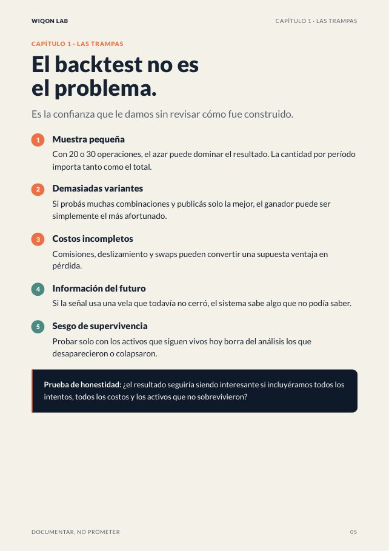
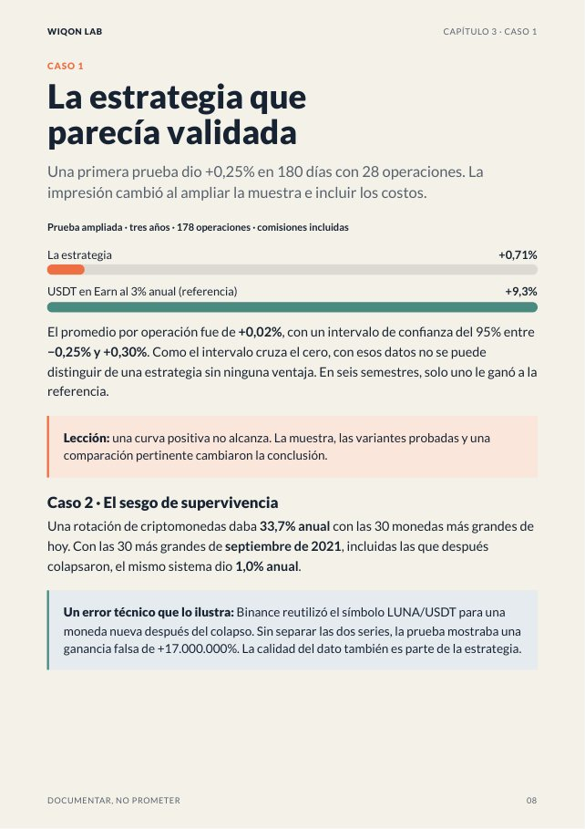
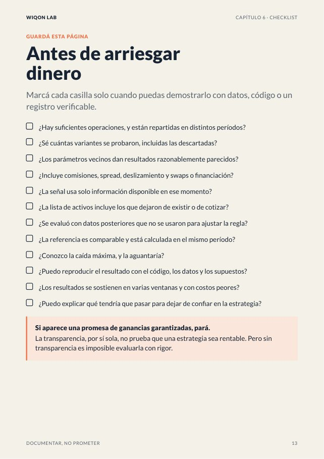

Probamos más de 20 ideas de trading con datos reales y costos reales. Sobrevivió una sola. Este libro te da las preguntas que separan una ventaja real de un golpe de suerte, para que puedas evaluar cualquier estrategia, robot o señal antes de poner tu dinero.
Qué vas a encontrar
- Las 5 trampas que hacen que un backtest salga demasiado bien
- Las 7 preguntas que tenés que hacerle a cualquier estrategia o robot
- 5 casos reales del laboratorio, con sus números: la estrategia que era suerte, el sesgo de supervivencia, el costo de los swaps
- Un protocolo de 7 pasos para auditar antes de arriesgar
- Un checklist para imprimir y un semáforo para decidir
16 páginas · PDF · Edición octubre 2026 · Ing. Avelino González
Mirá algunas páginas


